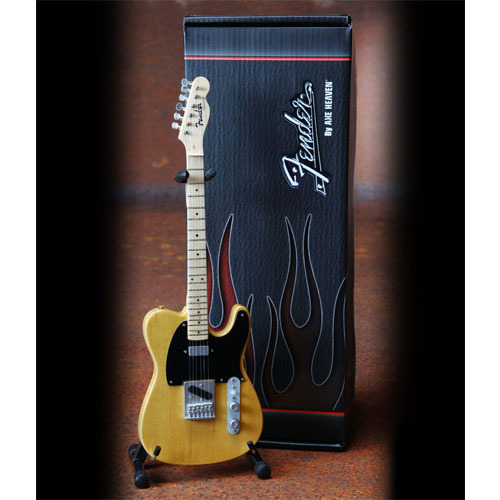
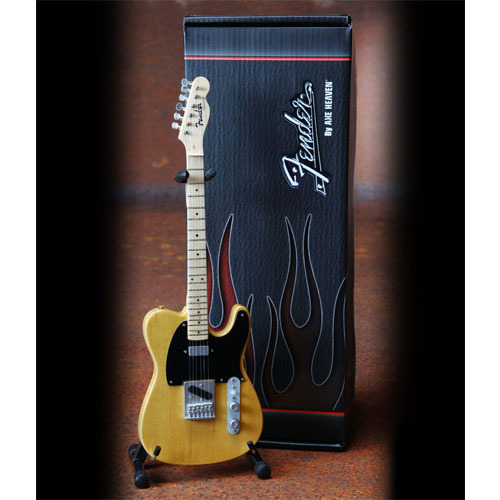

내가 좋아하는 것에는 동물, 기타,
음악, 프라모델, 현악기들 등등이 있어요.

최근에는 수학과 곡 연주법을 배웠는데, 로그와 Eric Clapton의 Wonderful Tonight에 대해 배웠어요.
2/3 = log(작은)ba 라는 식이 있으면, 2/3 = loga/logb 로 표현할 수 있다는 걸 배웠고, 아주 느리게 원더풀 투나잇 이라는 곡을 연주해봤지요.
또(결이 다른 얘기이지만은..)1월 19일엔 Green Day가 새 앨범을 내고, 2월23일엔 MGMT가 새 앨범을 내요.
이게 무슨일인지... 지금이 2010년인걸까요?.. 어안이 벙벙해요..